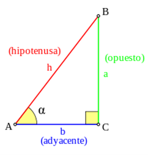
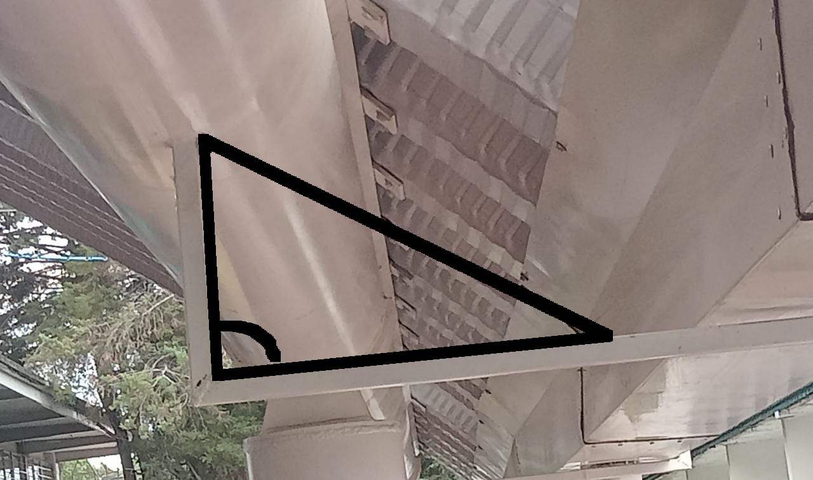
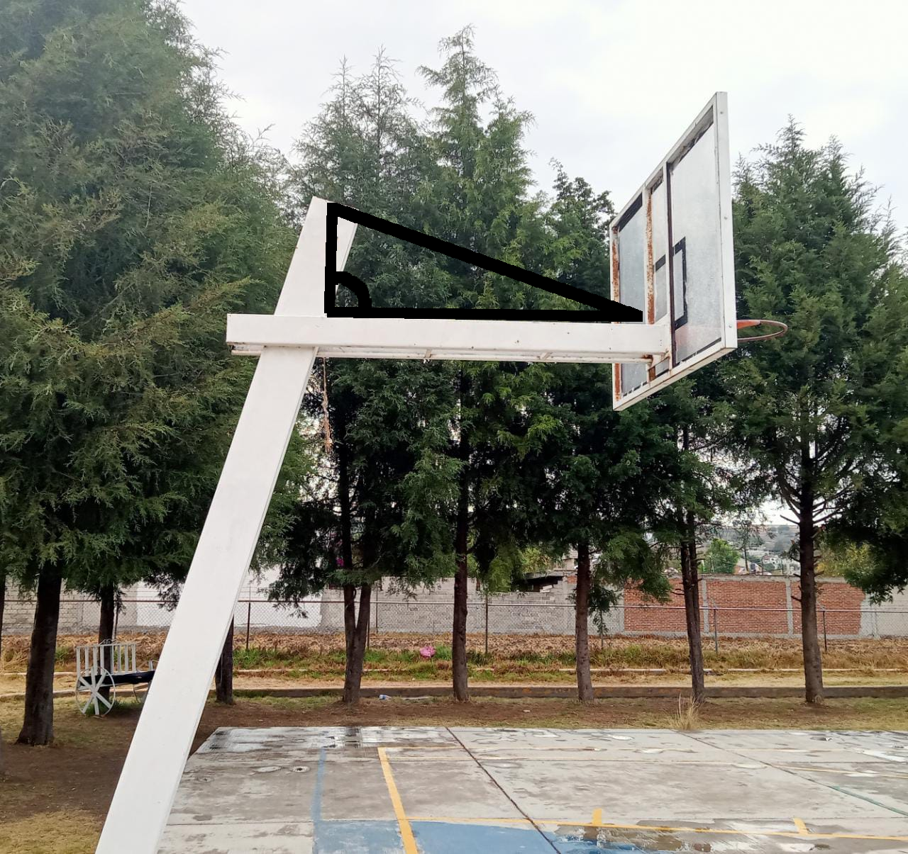
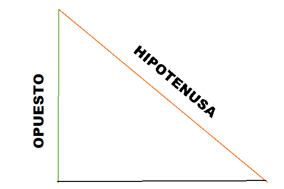

Funciones Trigonométricas
Para definir las funciones trigonométricas del ángulo: , del vértice A,
se parte de un triángulo rectángulo.
Los nombres de los lados de este triángulo rectángulo son:
- La hipotenusa (h) es el lado opuesto al ángulo recto, o el lado más grande.
- El cateto opuesto (a) es el lado opuesto al ángulo .
- El cateto adyacente (b) es el lado adyacente al ángulo .

Las funciones trigonométricas son razones trigonométricas, es decir la división
entre dos lados de un triángulo rectángulo respecto a sus ángulos, estas funciones
surgieron al estudiar el triángulo rectángulo y observar que los cocientes entre
las longitudes de dos de sus lados sólo dependen del valor de los ángulos del triángulo.
Existen 6 funciones trigonométricas básicas las cuales son:
- Seno
- Coseno
- Tangente
- Cotangente
- Secante
- Cosecantes
Ejemplos
A continuación presentaremos algunos ejemplos de las funciones.
- Seno
El seno de un ángulo es la relación entre la longitud del cateto opuesto
y la longitud de la hipotenusa.
Formula:
Sen a = opuesto / hipotenusa
- Coseno
El coseno de un ángulo es la relación entre la longitud del cateto adyacente
y la longitud de la hipotenusa.
Formula:
Cos a = adyacente / hipotenusa
- Tangente
La tangente de un ángulo es la relación entre la longitud del cateto opuesto
y la del adyacente.
Formula:
Tan a = opuesto / adyacente
- Cotangente
La cotangente de un ángulo es la relación entre la longitud del cateto adyacente
y la del opuesto.
Formula:
Cot a = adyacente / opuesto
- Secante
La secante de un ángulo es la relación entre la longitud de la hipotenusa
y la longitud del cateto opuesto.
Formula:
Sec a = hipotenusa / opuesto
- Cosecante
La cosecante de un ángulo es la relación entre la longitud de la hipotenusa
y la longitud del cateto opuesto
Formula:
Csc a = hipotenusa / opuesto
También tienen varias aplicaciones en astronomía, matemáticas, física,
en planos y en algunos otros fenómenos.
Imagenes
 EXPLICACION
Las funciones trigonométricas son la división entre los lados de un triángulo rectángulo, específicamente de los ángulos del mismo. Son aquellas que forman parte de un triángulo rectángulo, las cuales se sacan a partir de los lados del triángulo rectángulo
FUNCIONES:
Las funciones para sacar los resultados exactos son las siguientes:
- Seno
- Coseno
- Tangente
- Cotangente
- Secante
- Cosecantes
Estas sirven para tener más precisión a la hora de hacer cálculos especialmente en el campo de Arquitectura, Topografía, etc.
EJEMPLOS:
En continuación a lo anterior vamos a presentar algunos ejemplos de las funciones ya mencionadas.
SENO:
Esta función es sacada a partir del cateto opuesto y la longitud de la hipotenusa es decir el largo de la misma.
Y su fórmula es la siguiente:
Sen a = opuesto / hipotenusa
La función Seno va a ser calculada mediante el resultado de la división de el cateto opuesto / la hipotenusa, una vez que el resultado fue calculado ese será el SENO.
A continuación, podrán apreciar un ejemplo de ello:
